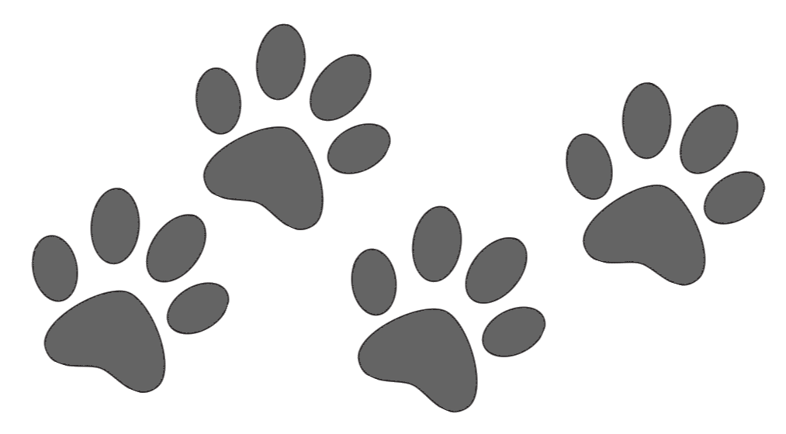

10 lieux de plein air pour profiter de la région Chaudière-Appalaches sans se ruiner
Saison estivale rime souvent avec vacances et dépenses, mais pourquoi se ruiner lorsqu’on peut profiter de plusieurs attraits gratuitement ? Avec ses paysages à couper le souffle, ses nombreuses montagnes et cours d’eau, la région de Chaudière-Appalaches regorge de lieux splendides, qui sont accessibles gratuitement ou à peu de frais. Voici quelques-uns de ces lieux. À découvrir pour les amateurs de plein air.
NOS COUPS DE COEUR (6)
- Piste cyclable
- Prêt de jeux
- Passerelle de l'Alliance qui surplombe la rivière Pozer
- Aires de jeux et de pique-nique
- 5 terrains de Volleyball de plage éclairés
- Divers sentiers de marche, 5 sentiers à découvrir
EN QUELQUES MOTS
À 5 minutes du centre-ville, le parc des Sept-Chutes est l'un des plus beaux parcs urbains en Chaudière-Appalaches
et charme quelques 50 000 visiteurs chaque année par ses arbres gigantesques dans une forêt urbaine aménagée de 80 hectares,
un réseau de sentiers incluant le Sentier des Gorges de la rivière Pozer et la passerelle de l'Alliance, qui surplombe la
septième chute, est suspendue à plus de 25 mètres de hauteur.
NOS COUPS DE COEUR (4)
- Vue exceptionnelle sur la rivière Chaudière et les Rapides-du-Diable
- 1 km de sentiers pour la randonnée et la raquette en hiver
- 7 panneaux thématiques, pour découvrir l'histoire de ce parc et l'origine de son nom
- Aire de repos et de pique-nique
EN QUELQUES MOTS
Le Parc des Rapides-du-Diable est situé entre la route 173 et la rivière Chaudière dans le territoire de la
Ville de Beauceville, en plein coeur de la Beauce. Pour les amoureux de vélo, un accès direct avec stationnement
pour la piste cyclable et pour la véloroute de la Chaudière et une vue exceptionnelle sur la rivière Chaudière
et les Rapides-du-Diable. Découvrez l'histoire de ce parc, son passé aurifère, l'origine de son nom et
l'influence de Benedict Arnold en consultant les panneaux thématiques.
NOS COUPS DE COEUR (5)
- Découvrez l'histoire de l'illustre famille Taschereau
- La Chapelle Sainte-Anne - Expo, dédiée à Sainte-Anne, de style néo-classique datant de 1890
- Un parcours dans le parc, historico-fantastique "Les Lieux enchantés"
- Conférences, activités, boutique culturelle, souvenirs et +
- Découvrez l'influence des inondations sur le milieu naturel.
EN QUELQUES MOTS
Bienvenue au parc écologique le plus inondable au Québec! Situé au coeur de la ville de Sainte-Marie, le parc nature
du Domaine Taschereau dévoile ses écosystèmes humides par le biais de 25 panneaux d'interprétation. Le site est idéal pour
la marche et la contemplation (plus de 150 espèces d'oiseaux observées). Les randonneurs (et les pique-niqueurs!)
apprécieront la vue à 360 degrés de l'Éco-refuge Desjardins et la passerelle aérienne Placide-Poulin, érigée à la hauteur
des légendaires inondations de la Chaudière (5 mètres). En hiver, parcourez le site en ski de fond, à la marche ou en
raquette.
ÉVADEZ-VOUS EN PLEINE NATURE
Venez gravir le mont Sainte-Marguerite, le plus haut sommet en Chaudière-Appalaches, en empruntant nos magnifiques sentiers de randonnée! En effet, le Domaine du Radar vous propose cinq sentiers sur 8 kilomètre et une piste consacrée à la marche nordique avancée qui s'étendent sur plusieurs kilomètres en forêt. Bien entretenus et clairement balisés, nos sentiers s'adressent aux randonneurs de tous niveaux. Une plage a aussi été récemment aménagée. Sur place, des espaces de camping, des chalets et des yourtes sont également disponibles, et il est possible de s’inscrire pour des cours de survie en forêt. La plus belle vue panoramique de la région vous attend à votre arrivée au sommet ! Lorsque le ciel est dégagé, vous pouvez voir à des kilomètres à la ronde des paysages magnifiques et typiques de Chaudière-Appalaches.
EN QUELQUES MOTS
Le Sentier des mineurs est un site de randonnée pédestre de niveau facile. En parcourant à pied ou même en ski les différentes boucles qui totalisent 7,8 km, vous découvrirez points de vue, aires de repos, belvédères et panneaux d'interprétations historiques, géologiques et fauniques. Une aire de jeux pour les enfants ainsi qu'une aire de pique-nique des plus artistiques complètent l'offre du site. Le site se démarque comme étant un des rares endroits de la région de Thetford où la nature a repris ses droits suite à l'exploitation minière. Vous aurez la chance de partir à la découverte de deux anciens puits de mines devenus de grands lacs : la Mine Boston (lac Boston) et la Mine Carey. Le Lac Boston est alimenté par une superbe chute, ce qui fait que le milieu est propice à l'ensemencement de poissons pour la pêche sportive. La Mine Carey pour sa part offre une vue magnifique sur une eau d'une couleur turquoise foncée.
EN QUELQUES MOTS
Plusieurs sentiers, totalisant 6 km, évoquent le trekking en montagne et conduisent au sommet d'une altitude de 608 mètres où des tours d'observation permettent d'avoir une vue spectaculaire de la région. Des aires de repos, d'interprétation, d'observation des étoiles et de camping sauvage y sont aussi aménagées. Les amateurs de grimpe seront comblés! Plusieurs voies ont été aménagés pour favoriser la pratique de ce sport. Les amateurs de vol libre trouveront l'une des plus belles plateformes de départ. La montagne est située dans la Municipalité de Sainte-Clotilde-de-Beauce offrant plusieurs services et attraits dont un Pont couvert et un antique barrage.
EN QUELQUES MOTS
Le Sentier des Campions est un sentier linéaire de près d'un kilomètre auquel deux autres boucles se greffent, totalisant un peu plus de 2 km. Les trois parcours, nommés Whetstone, le Petit Cap et Les Campions, se trouvent dans un boisé mixte, très diversifié en ce qui a trait aux essences d'arbres et de végétaux. Des panneaux d'interprétation sont placés tout au long des sentiers. Le début du sentier linéaire longe la très jolie rivière Whetstone. Deux des sentiers sont de niveau de difficulté «facile» et le troisième, le plus long, est classé «intermédiaire». La légende veut qu’un groupe de personnes sans-abris et à la recherche de travail, se soient construit un refuge en hiver à cet endroit au milieu du 19e siècle. Le nom du sentier "les Campions" a été donné en hommage à cette légende.
EN QUELQUES MOTS
Les boucles de 5,1 et 1,2 kilomètres vous charmeront avec leurs multiples petits ponts artisanaux et une flore riche de plusieurs espèces. Le plus grand sentier vous permet de longer le bord du lac où sont aménagées quelques aires de repos. Le sentier fait une boucle de 6 km qui longe, en forêt publique (175 ha), la berge d'un lac vierge de 19 ha, le lac Caribou, et d'un grand marais de même superficie. Ces forêts précoloniales ont plus de 200 ans. Le site présente une très riche biodiversité et quelques curiosités naturelles. Il est très fréquenté par les oiseaux migrateurs. Nombreux points de vue. 93 espèces d'oiseaux répertoriées sur ce site sauvage. Secteurs de vieilles forêts. 20 panneaux d'interprétation. Un parcours de 5 km est aussi possible en évitant la boucle du Marais.
EN QUELQUES MOTS
Le Mont Bélanger, localisé à proximité de St-Robert Bellarmin, se dresse à plus de 960 mètres d’altitude. Sous le couvert d’un paysage à couper le souffle, entre les collines, les escarpements et les lacs, les amants de la nature peuvent profiter d’une faune luxuriante et d’un paysage qui relève ni plus ni moins des plus belles cartes postales. Via des sentiers pédestres, au-dessus de chacun des nombreux sommets se dessinent une nouvelle perspective. Les Éboulis et le Lac Émilie ne sont que des exemples de sites tout à fait charmants. Le mont Bélanger offre 8 sentiers totalisant 20 km de randonnée avec dénivelés de 120 à 420 mètres ! Lors de votre passage, vous pourrez profiter de plusieurs kilomètres de sentiers afin de vous rendre à la tour d’observation de 6 mètres érigée au sommet du mont d’une altitude de 960 mètres. Plusieurs espaces de camping sauvage et un petit chalet sont également disponibles pour ceux qui souhaitent y rester pour la nuit.
EN QUELQUES MOTS
Au nombre des merveilles de Chaudière-Appalaches, mais plus précisément de la Beauce, il y a au fin fond d’un rang à Saint-Séverin, le Domaine à l’Héritage. Un jardin public qui se veut surtout un espace de détente. Le Domaine à l’Héritage, c’est l’histoire d’une famille, celle d’Arthur Lachance. L’aménagement du site, qui a débuté il y a une trentaine d’années, a été fait pour rendre hommage aux pionniers de la Beauce et reconnaître leur labeur. Au fil des 15 stations proposées, on y retrouve sept lacs et étangs ainsi que des aménagements paysagers agrémentés de sculptures. Mieux encore, des kiosques, des patios, des chaises longues et des tables à pique-nique peuvent être utilisés pour profiter de la beauté des lieux et se ressourcer. Plusieurs plateaux présentant différents décors sauront vous charmer à tout coup. Cet endroit est très prisé notamment pour les photos de mariage grâce à son décor pittoresque.
Huit montagnes à gravir dans le coin de la Beauce
L’appel de la nature, des grands espaces et d’un point de vue à couper le souffle, telles sont les raisons qui poussent à gravir une montagne. Plusieurs montagnes sont accessibles facilement dans le coin de la Beauce pour se promener en famille ou entre amis, pour surpasser ses limites ou encore simplement pour respirer et s’évader un peu de sa routine. EnBeauce.com vous propose ici une liste de ces espaces naturels qui sont ouverts pendant l’été et qui proposent de la randonnée pédestre de différents niveaux.
Mont Grand Morne, Sainte-Clotilde-de-Beauce
Au total, ce sont six kilomètres de sentiers en montagne qui conduisent au sommet de ce Mont haut de 608 mètres d’altitude. Une fois en haut, des tours d’observation permettent de profiter pleinement de la vue. Lien webMont Bélanger, Saint-Robert-Bellarmin
Plusieurs sentiers pédestres permettent de profiter d’une faune importante et des paysages qui se composent notamment de lacs et de collines. Depuis peu, il y a même une tour d’observation de six mètres de hauteur (20 pieds) située au sommet du Mont Bélanger, à plus de 960 mètres d’altitude. Lien webMont Adstock, Adstock
Surtout connu pour ses pistes de ski, le Mont Adstock abrite également neuf kilomètres de parcours, qui conduisent au sommet pour profiter d’une vue à 360 degrés sur la région. Lien webParc régional du Massif du Sud, Saint-Philémon
Le parc régional du Massif du Sud offre un réseau totalisant 71 kilomètres de sentiers de randonnée à travers la forêt. Les différentes marches permettent de découvrir des points de vue remarquables, des rivières, des forêts anciennes, ou encore plusieurs races d’oiseaux. Lien webLes trois Monts de Coleraine, Saint-Joseph-de-Coleraine
D’abord, le sentier du Mont Oak, qui monte à 460 mètres d'altitude, propose un parcours éducatif sur la géologie en marchant à travers différents écosystèmes forestiers. La Colline Kerr (494m), abrite quant à elle un sentier de 2,7 kilomètres de niveau intermédiaire qui vous amènera jusqu’à son sommet. D’un côté, on peut notamment observer le mont Adstock ainsi que le cratère d'une mine des environs de Thetford Mines. De l’autre, on y voit de nombreux lacs de la région en plus d'une vue sur le village de Saint-Joseph-de-Coleraine et du Mont Mégantic. Enfin, le Mont Caribou, culminant à 558 mètres d'altitude, offre une vue à 360 degrés sur la région. Un aller-retour de deux heures permet de profiter de cette vue. Pour les plus aguerris, il y a également une crête de près d’un kilomètre permettant de faire une boucle d’environ cinq heures de marche. Lien webParc des Appalaches, Près de Saint-Philémon
Un total de 140 kilomètres de sentiers sont accessibles dans le Parc des Appalaches. On y retrouve à la fois des parcours adaptés aux familles, mais aussi des sentiers plus abrupts menant au sommet des montagnes dont les monts Sugar Loaf et Grande Coulée avec des vues panoramiques. En marchant, on peut voir des eskers, des lacs ou également la rivière Noire Nord-Ouest par exemple. Lien webMont Ham, Saint-Joseph-de-Ham-Sud
Plus haute montagne de notre article, le Mont-Ham culmine à 713 mètres d’altitude. Un total de 18 kilomètres de randonnées permettent, à différentes échelles, de profiter de vue panoramique sur les régions qu’il domine. Lien webMont Gosford, Saint-Augustin de Woburn
À la frontière canado-américaine, cette montagne propose plus de 40 kilomètres de sentiers de randonnée. Au sommet, une tour d’observation offre une vue à 360 degrés sur les montagnes frontalières ainsi que sur les montagnes des États du Maine et du New Hampshire. Lien webRandonnées à faire avec son chien au Québec
Ils offrent des points de vue magnifiques et les chiens y sont autant les bienvenus que les humains qui tiennent leur laisse: voici de beaux sentiers de randonnée où il est permis d’emmener pitou, un peu partout au Québec.
Le parcours du Mont-Chocolat, Parc régional du massif du Sud, Chaudière-Appalaches
Érablières, rivière, belvédère et sommet avec vues: voici ce qui vous attend sur ce sentier aux 380 m de dénivelé. Pour ceux qui connaissent déjà: une variante de retour « un peu plus ardue » a été ajoutée en 2021, indique le site du parc. À vous de décider!
- Longueur : 7,9 km (aller-retour)
- Niveau : Intermédiaire
- Tarif adulte : 8 $
Secteur des Trois-Fourches, sentier de la rivière du chêne, Leclercville
Au coeur de la Forêt de la Seigneurie de Lotbinière renferme l'une des plus fortes concentrations de vieilles forêts des basses-terres du Saint-Laurent! Destiné aux adeptes de longues randonnées.
- Longueur : 16 km (aller)
- Niveau : Modéré à difficile
- Tarif adulte : Gratuit
Secteur Saint-Daniel, Parc national de Frontenac, Adstock
La Sépaq a décidé de mener ce projet pilote, sous certaines conditions, afin de mesurer l'impact de la présence des chiens sur l'expérience de visite et sur le milieu naturel. Aux termes de la réalisation du projet pilote, la Sépaq prendra une décision éclairée pour tous les parcs nationaux dans l’avenir !
- Longueur : 5 km, 3,2 km ou 16 km (aller-retour)
- Niveau : Facile
- Tarif adulte : 9,25 $
La passerelle le canyon et la chute, Parc des chutes d'Armagh, Armagh
Vous aurez l'occasion de découvrir des décors variés, tantôt le long de la rivière Armagh, tantôt en forêt. Bien sûr, vous pourrez emmener votre chien en laisse.
- Longueur : 5 km (aller-retour)
- Niveau : Facile
- Tarif adulte : 8 $
Voici en extra : 21 parcs nationaux au Québec où tu peux amener ton chien cet été.
Lien web